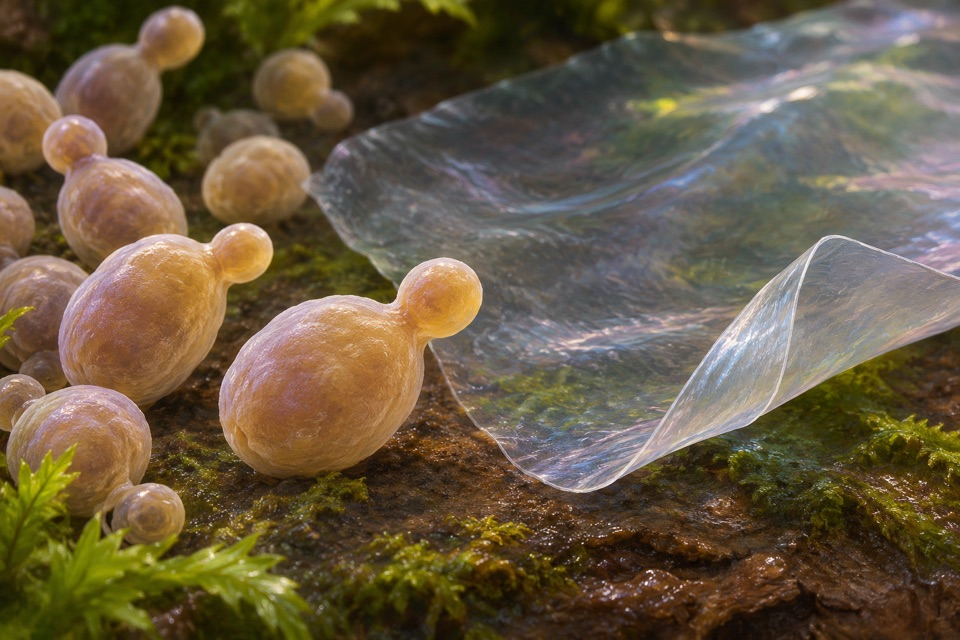
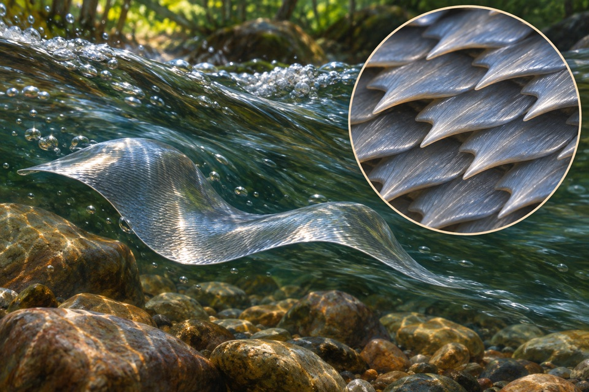
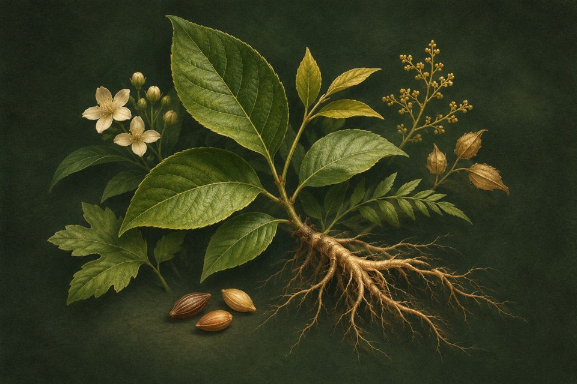
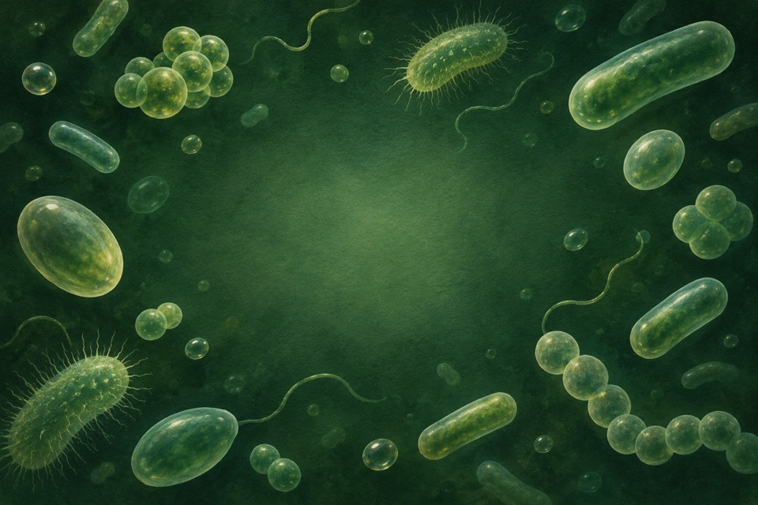

Module 01
Uniparental haploid formation through centromere asymmetry
Measure progeny ploidy and which parent contributed the retained chromosomes.
Evidence recordOpen any of the ten modules to see the reported observation, its sources, and the research questions still open.
Measure progeny ploidy and which parent contributed the retained chromosomes.
Evidence record
Measure pullulan quantity and molecular mass as separate outcomes.
Evidence record
Quantify accessible wall-associated binding protein and its target binding.
Evidence record
Measure self-propelled foil speed at matched motion.
Evidence record
Quantify axillary bud outgrowth and branching as distinct endpoints from stem height.
Evidence record
Measure chitin deacetylation separately from cleavage of the polysaccharide backbone.
Evidence recordLocalize a genetically tagged protein or cellular region by spatially resolved electron-dense contrast.
Evidence record
Measure momentum transfer to water during a surface stroke.
Evidence recordTrack leaflet initiation foci, local auxin activity and mature leaf shape as separate observations.
Evidence record
Confirm loss of PLA substrate with formation of defined soluble products.
Evidence record